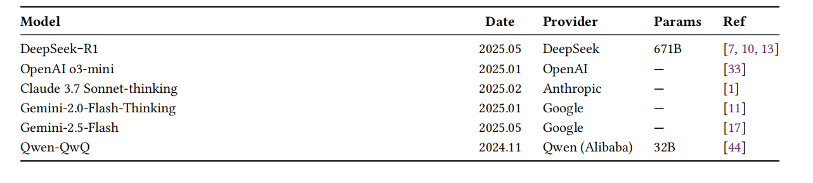
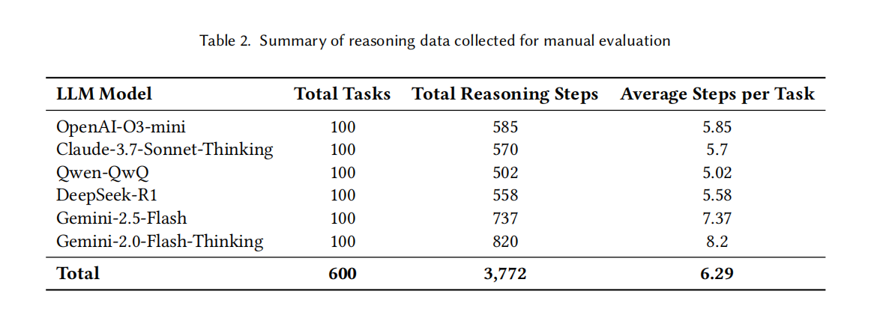
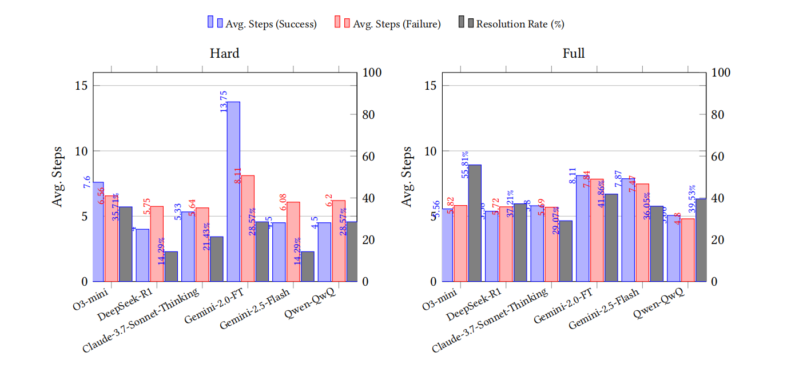
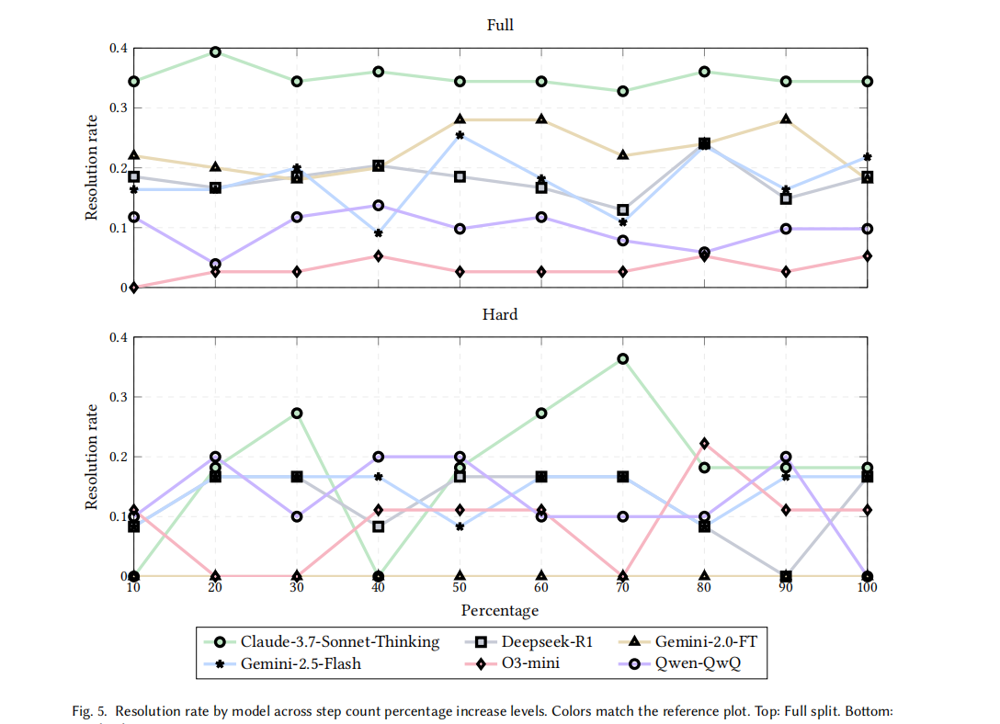
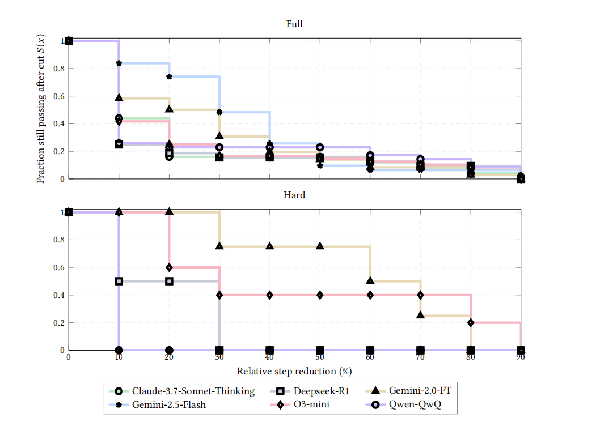

An Empirical Study of Reasoning Steps in Thinking Code LLMs
文章概述
这篇论文题目为《An Empirical Study of Reasoning Steps in Thinking Code LLMs》，从steps count, Efficiency, Logic Consistency, Completeness的角度分析了Reasoning model在解决代码问题时的Reasoning steps的具体内容。
本文主要的贡献是：
- 建立了对Reasoning过程分析的标准，提出从steps count, Efficiency, Logic Consistency, Completeness入手进行分析。
- 通过对实验数据的分析，得出了一些结论：Reasoning steps好像没有什么规律，有的模型每一步思考的少但思考多步，有的模型思考的多但思考少步；在代码问题中，模型错误的原因有44.5%都是Completeness Issues（忽略边界、忽略题目中某个约束条件、只生成逻辑没有验证的代码、推理中断）
但我看下来，论文数据标注和分析有很多不严谨的地方，涉及到人工标注、数据分析，可能都是如此，不像刷benchmarks那样简单直接。另一方面，文章篇幅太长了，足足36页还不加附录，可能是要投期刊所以这么长。
研究背景
传统的非思考型（non-thinking）LLMs在处理复杂编程任务时存在透明度不足的问题 。即使模型生成了正确的代码，其内部的推理过程（如假设、决策点）仍然是潜在的，难以进行独立验证和审计 。近期出现的“Thinking LLMs”（如 OpenAI-o1/o3、DeepSeek-R1、Claude 3.7 Sonnet-thinking 等）通过显式生成中间推理链（Reasoning Traces）来模拟人类的认知过程，有望提升代码生成的透明度和准确性 。
尽管这些模型表现优异，但其推理链的质量（如推理步骤的长度、逻辑严密性）尚未得到系统的评估 。
本文希望对LLMs在解决代码问题时的推理链进行分析，深入研究以下内容：
RQ1：推理过程分析：研究推理链的结构特征（步骤数、词数）及其与成功率的关系 。
RQ2：推理质量分析：通过 21 名参与者进行的人工评估，从三个维度打分 ： 效率（Efficiency）：推理是否精炼且无冗余。 逻辑一致性（Logic Consistency）：步骤之间是否逻辑连贯。 完整性（Completeness）：是否覆盖了所有需求和边缘情况。
解决方法
RQ1 : 推理Steps分析
针对RQ1，作者提出了几个子问题：
- Thinking model对每个task需要思考几步，成功的cases和失败的cases思考的次数差别大吗？
- 如果人为地增加或者缩短thinking steps，会影响成功率吗？
这里直接给出结果：
- 模型的thinking steps见Table2；思考的次数差别因模型而异，没什么规律。
- 人为增加thinking steps对简单任务的影响不大，对困难任务可能提高也可能降低；认为减少thinking steps对简单和困难任务均有影响，但是对困难任务影响大一些(只减少10%的thinking steps就会导致模型崩溃)
数据收集
本文在如下的Reasoning model上收集数据。具体来说，本文从BigCodeBench这个代码测试的数据集中选取100个tasks，其中Hard tasks和Full tasks与原数据集的分布一致(分别为14% 和 86%)。随后，这些题目被送入6个测试模型中，提示词要求模型按照 <><> …. <><>的格式输出。最终收集了共600个回答，并统计了每个模型的Total Reasoning Steps和 Average Steps per Task， 如下图所示。  
数据分析
本文对Reasoning model在困难数据集和一般数据集上的Reasoning steps做了统计，统计结果如下。对这些数据进行分析，发现在一般数据集上(对应 Full)，模型的成功率和Reasoning steps相关性趋近于0；在困难数据集上，推理的深度才发挥作用。 
考虑人为地增加或者缩短模型的thinking steps，比如通过提示词规定，模型必须在k步内解决问题。本文对Reasong model成功解决的问题集进行了thinking steps reduce，解决失败的问题进行了thinking steps increase。根据reduce/increase的比例，每10%绘制一个散点，绘制出散点图如下： 随着thinking steps的增加，Full任务上模型表现基本不变，Hard任务上模型表现比较混乱，没什么规律。随着thinking steps的减少，Full/Hard任务上模型表现均有下降，Hard任务下降的程度更高。（说实话都没什么规律，但是作者还是强行分析了一下）  
RQ2:推理质量分析
针对RQ2, 作者希望从3个角度分析Reasoning Steps： 效率(推理是否精炼且无冗余) 逻辑一致性(步骤之间是否逻辑连贯) 完整性(是否覆盖了所有需求和边缘情况)。为了达到这个目的，作者构建了对Reasoning Steps中的错误的分类方法，并邀请了 21 名参与者进行数据标注。具体的实验方法和结果在下面讨论，
人工数据标记的方法
- 人员背景：21 名标注者(14 名软件工程方向的研究生和 7 名具有 3-8 年工作经验的专业软件工程师。)所有人精通 Python，并对 LLM 推理（Chain-of-Thought）有实际使用经验。
- 标记方法：每个维度都采用 3 分制（1-Poor, 2-Fair, 3-Good）：
- 效率（Efficiency）：模型是否绕弯路？是否有大量重复的废话？高分标准：推理过程精炼，每一步都直接导向最终解决方案。
- 逻辑一致性（Logic Consistency）：推理步骤之间是否连贯？前面的假设和后面的操作是否矛盾？高分标准：推理链条无逻辑断裂，思维流转自然且正确。
- 完整性（Completeness）：逻辑：模型是否考虑了所有题目约束？是否分析了边缘情况？高分标准：所有的输入要求都被逐一分析，且包含了对潜在错误（如空输入、越界等）的预判。
- 其他的标注标准
盲审：标注者不知道当前阅读的推理链是由哪个模型生成的，以消除品牌偏见。
基准培训：在正式标记前，所有人先共同标记几个样本，对“什么是 1 分，什么是 3 分”达成共识。
独立标注 ：每个推理链至少由 2 名标注者 独立打分。
一致性检查：使用 Cohen’s Kappa 系数计算两人打分的一致性。如果系数低（<0.6），说明评分标准模糊，需重新培训。本文的 Kappa 值在 0.72-0.85 之间，属于“高度一致”。
标注结果分析

- 完整性缺陷—— 占比最高 (44.5%)
- 推理中断 ：模型在没得出最终结论或代码计划前，推理链突然停止（可能受限于 Token 长度）。
- 缺失要求覆盖：忽略了题目中的某个特定约束或功能点。
- 忽视边界情况 ：未能考虑极端输入（如空列表、极大值、类型错误等）。
- 验证缺失 ：推理中只有生成逻辑，没有自我检查或预演代码运行结果的步骤。
- 效率缺陷—— 占比 33.5%
- 冗余思考：模型不断重复已知信息，或者在不同的措辞下循环同一逻辑。
- 过度解释细节：在一些极其简单的逻辑（如变量赋值）上花费大量篇幅，导致推理链虚胖。
- 死胡同搜索 ：模型尝试了一种错误的思路，在意识到错误后又花了大量篇幅解释为什么错了，而不是迅速转向。
- 逻辑与正确性缺陷—— 占比 22%
- 逻辑矛盾：推理的前后步骤相互矛盾（例如开头说用 A 算法，结尾却在写 B 算法的逻辑）。
- 事实错误 ：对编程语言语法、标准库函数的功能理解有误。
- 错误的转换：从推理计划转换为最终代码时，丢失了推理中原本正确的逻辑。
我的思考
该研究为我们理解“Thinking LLMs”提供了一些启示 ：推理长度不是唯一指标：步数多不代表质量高。完整性是核心瓶颈：目前模型在代码生成中最弱的环节是未能完全分析所有约束和边缘情况（特别是难题） 。